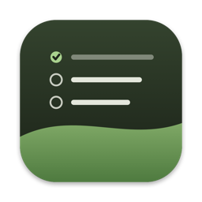
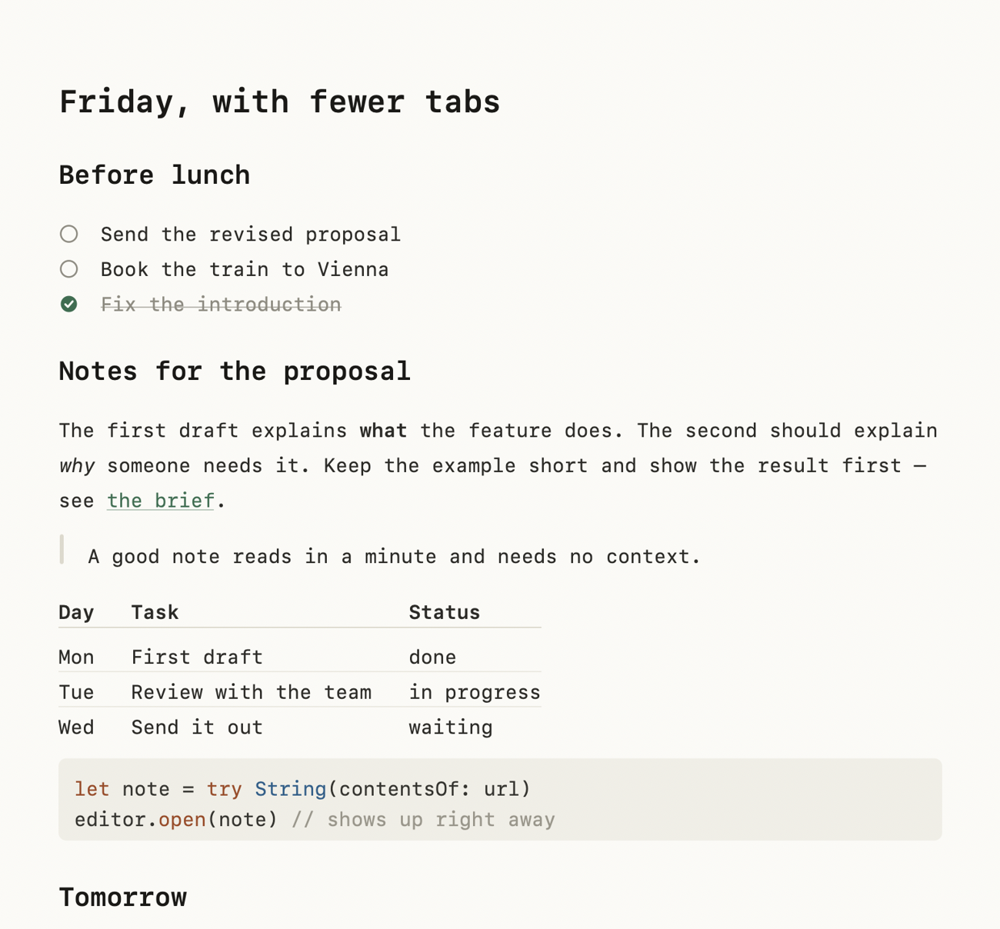

<title>Meadow</title>
<meta name="claude:viewport-fit-sides" content="cover">
<meta name="description" content="Meadow is a native Markdown notes editor for macOS: plain .md files, live preview, a third-of-a-second launch.">
<link rel="preconnect" href="https://fonts.googleapis.com">
<link rel="preconnect" href="https://fonts.gstatic.com" crossorigin>
<link rel="stylesheet" href="https://fonts.googleapis.com/css2?family=Bricolage+Grotesque:opsz,wght@12..96,500..800&family=Figtree:wght@400;500;600;700&family=JetBrains+Mono:wght@400;500;700&display=swap">
<style>
/* Layout: night-to-dawn. A dark hero where a horizon of light lands on the app window, a pale mist band holding a dark bento,
   then dark sections for the stack and the numbers, closing on a second horizon. Deliberately dark-only, like the app's moss theme. */
:root {
  color-scheme: dark;
  --night: #070a08;
  --night-2: #0b0f0c;
  --panel: #0f140f;
  --moss: #21271d;
  --line: rgba(214, 235, 200, .09);
  --line-2: rgba(214, 235, 200, .18);
  --fg: #eef3e8;
  --fg-dim: #c9d3c1;
  --muted: #8d9988;
  --sprout: #b6e39a;
  --dawn: #ffdca8;
  --dawn-hot: #fff4e0;
  --loss: #f0b072;
  --bar: #2c3529;
  --mist: #eaefe4;
  --mist-ink: #0b0f0b;
  --mist-muted: #50604b;
  --mist-ring: rgba(255, 255, 255, .75);
  --haze-warm: rgba(255, 205, 150, .5);
  --haze-green: rgba(170, 222, 140, .45);
  --ink-on-light: #10160f;
  --font-display: "Bricolage Grotesque", "Avenir Next", -apple-system, sans-serif;
  --font-text: "Figtree", -apple-system, "Segoe UI", sans-serif;
  --font-mono: "JetBrains Mono", ui-monospace, "SF Mono", Menlo, monospace;
}
* { box-sizing: border-box; }
html { scroll-behavior: smooth; }
body { margin: 0; background: var(--night); color: var(--fg); font-family: var(--font-text); font-size: 16px; line-height: 1.55; -webkit-font-smoothing: antialiased; }
.gutter { padding-left: max(20px, env(safe-area-inset-left, 0px)); padding-right: max(20px, env(safe-area-inset-right, 0px)); }
.col { max-width: 1180px; margin: 0 auto; }
a { color: inherit; }
:focus-visible { outline: 2px solid var(--sprout); outline-offset: 3px; border-radius: 8px; }
code { font-family: var(--font-mono); font-size: .86em; background: rgba(214, 235, 200, .08); padding: 1px 6px; border-radius: 6px; color: var(--fg); }

/* Type scale: 13 / 16 / 18 / 22 / 30 / clamp display */
.label { font-family: var(--font-mono); font-size: 12.5px; letter-spacing: .08em; text-transform: uppercase; color: var(--sprout); }
h1, h2 { font-family: var(--font-display); font-weight: 750; letter-spacing: -.045em; margin: 0; text-wrap: balance; }
h1 { font-size: clamp(48px, 9.6vw, 112px); line-height: .94; max-width: 11ch;
  background: linear-gradient(180deg, var(--fg) 30%, var(--fg-dim)); -webkit-background-clip: text; background-clip: text; color: transparent; }
h2 { font-size: clamp(38px, 6.4vw, 76px); line-height: .98; }
h3 { margin: 0; font-size: 18px; letter-spacing: -.01em; font-weight: 650; }
.lead { font-size: clamp(17px, 2vw, 19px); color: var(--muted); max-width: 54ch; margin: 0; text-wrap: pretty; }
.lead b { color: var(--fg); font-weight: 600; }

/* Nav */
nav { position: relative; z-index: 3; padding-block: 18px; }
nav .col { display: flex; align-items: center; gap: 28px; }
.brand { display: flex; align-items: center; gap: 10px; font-family: var(--font-display); font-weight: 700; font-size: 20px; letter-spacing: -.02em; text-decoration: none; }
.brand img { width: 30px; height: 30px; }
.navlinks { display: flex; gap: 26px; font-size: 15px; color: var(--fg-dim); flex: 1; }
.navlinks a { text-decoration: none; }
.navlinks a:hover { color: var(--fg); }
.pill {
  display: inline-flex; align-items: center; gap: 9px; border-radius: 999px; text-decoration: none; white-space: nowrap;
  font-family: var(--font-mono); font-size: 12.5px; font-weight: 700; letter-spacing: .08em; text-transform: uppercase; padding: 9px 16px;
  border: 1px solid var(--line-2); color: var(--fg);
}
.pill:hover { border-color: var(--fg-dim); }
.pill svg { width: 16px; height: 16px; fill: currentColor; flex: none; }

/* Hero */
.hero { position: relative; overflow: hidden; padding-block: 64px 0; }
.hero .col { position: relative; }
.hero-text { position: relative; z-index: 2; display: flex; flex-direction: column; gap: 26px; align-items: flex-start; }
.cta {
  padding: 15px 26px; font-size: 13px; color: var(--ink-on-light); border: 0;
  background: linear-gradient(90deg, #f3f6ee, var(--dawn-hot) 70%, var(--dawn));
  box-shadow: 0 0 0 1px rgba(255, 236, 200, .9), 0 0 18px 2px rgba(255, 206, 140, .55), 0 0 60px 8px rgba(182, 227, 154, .22);
  transition: box-shadow .25s ease, transform .25s ease;
}
.cta:hover { box-shadow: 0 0 0 1px #fff, 0 0 24px 4px rgba(255, 206, 140, .75), 0 0 80px 14px rgba(182, 227, 154, .3); transform: translateY(-1px); }
.cta .arrow { font-size: 16px; letter-spacing: 0; }
.ctas { display: flex; flex-wrap: wrap; gap: 14px; align-items: center; }
.facts { display: flex; flex-wrap: wrap; gap: 6px 20px; font-family: var(--font-mono); font-size: 12.5px; color: var(--muted); }
.facts span::before { content: "·"; margin-right: 20px; color: var(--line-2); }
.facts span:first-child::before { content: none; }

/* The horizon: light rising off the top edge of the window, with blades of light like grass against the dawn. */
.stage { position: relative; margin-top: 40px; z-index: 1; }
.stage .dawn {
  position: absolute; left: -30%; right: -30%; bottom: 95.6%; height: min(720px, 90vw); pointer-events: none;
  background:
    radial-gradient(42% 70% at 50% 100%, rgba(255, 238, 205, .55), rgba(255, 206, 140, .22) 35%, transparent 70%),
    radial-gradient(70% 95% at 50% 100%, rgba(150, 214, 120, .28), rgba(70, 120, 60, .1) 45%, transparent 75%);
}
.stage .blades {
  position: absolute; left: -10%; right: -10%; bottom: 95.6%; height: min(380px, 50vw); pointer-events: none;
  background: repeating-linear-gradient(90deg, rgba(255, 244, 220, .16) 0 1px, transparent 1px 9px, rgba(190, 235, 160, .09) 9px 10px, transparent 10px 23px);
  -webkit-mask: radial-gradient(45% 100% at 50% 100%, #000 10%, transparent 75%);
  mask: radial-gradient(45% 100% at 50% 100%, #000 10%, transparent 75%);
}
.stage .horizon {
  position: absolute; left: -8%; right: -8%; top: 4.02%; height: 2px; z-index: 2; pointer-events: none;
  background: linear-gradient(90deg, transparent, rgba(255, 220, 168, .5) 18%, var(--dawn-hot) 42%, #fff 50%, var(--dawn-hot) 58%, rgba(255, 220, 168, .5) 82%, transparent);
  box-shadow: 0 0 12px 2px rgba(255, 226, 180, .7), 0 0 44px 8px rgba(255, 206, 140, .35);
}
.stage .horizon::after {
  content: ""; position: absolute; inset: -3px 0; border-radius: 4px;
  background: linear-gradient(90deg, transparent 0 40%, rgba(255, 255, 255, .95) 50%, transparent 60% 100%) no-repeat;
  background-size: 30% 100%; background-position: -40% 0; filter: blur(2px);
  animation: sweep 7s ease-in-out infinite;
}
@keyframes sweep { 0% { background-position: -40% 0; } 60%, 100% { background-position: 140% 0; } }
.stage img { position: relative; z-index: 1; display: block; width: 100%; height: auto; }
.stage::after {
  content: ""; position: absolute; inset: 10% 8% 6%; z-index: 0; border-radius: 40px;
  background: radial-gradient(60% 50% at 50% 0%, rgba(182, 227, 154, .18), transparent 70%); filter: blur(20px);
}

/* Marquee of features */
.ticker { position: relative; z-index: 2; display: flex; flex-direction: column; gap: 14px; padding-block: 8px 72px; }
.ticker p { margin: 0; font-size: 14px; color: var(--muted); }
.track-wrap { overflow: hidden; -webkit-mask: linear-gradient(90deg, transparent, #000 8%, #000 92%, transparent); mask: linear-gradient(90deg, transparent, #000 8%, #000 92%, transparent); }
.marquee { display: flex; width: max-content; animation: roll 38s linear infinite; }
.marquee ul { display: flex; gap: 12px; padding: 0 12px 0 0; margin: 0; list-style: none; }
.marquee li { font-size: 15px; white-space: nowrap; color: var(--fg-dim); padding: 6px 14px; border: 1px solid var(--line); border-radius: 999px; background: var(--night-2); }
.marquee li b { color: var(--sprout); font-weight: 600; font-family: var(--font-mono); font-size: 13px; margin-right: 6px; }
@keyframes roll { to { transform: translateX(-50%); } }

/* Mist band with the bento */
.mist {
  background:
    radial-gradient(38% 45% at 8% 12%, var(--haze-warm), transparent 70%),
    radial-gradient(40% 50% at 96% 70%, var(--haze-green), transparent 70%),
    var(--mist);
  color: var(--mist-ink); padding-block: 104px 112px;
}
.mist .lead { color: var(--mist-muted); }
.head { display: flex; flex-direction: column; gap: 18px; margin-bottom: 48px; }
.bento { display: grid; grid-template-columns: repeat(12, minmax(0, 1fr)); gap: 20px; }
.tile {
  background: var(--moss); color: var(--fg); border-radius: 20px; overflow: hidden; display: flex; flex-direction: column; min-width: 0;
  box-shadow: 0 0 0 6px var(--mist-ring), 0 24px 60px -30px rgba(20, 40, 15, .45);
}
.w7 { grid-column: span 7; } .w5 { grid-column: span 5; }
.media { flex: 1; min-height: 280px; display: grid; place-items: center; padding: 28px 24px 8px; position: relative; }
.media img { display: block; width: 100%; height: auto; }
.cap { padding: 22px 26px 26px; color: var(--muted); font-size: 15.5px; display: flex; flex-direction: column; gap: 14px; }
.cap p { margin: 0; max-width: 52ch; }
.cap b { color: var(--fg); font-weight: 600; }
.seg { display: inline-flex; gap: 3px; padding: 3px; border-radius: 999px; border: 1px solid var(--line-2); align-self: flex-start; }
.seg button { font: inherit; font-size: 13.5px; border: 0; border-radius: 999px; background: transparent; color: var(--muted); padding: 6px 14px; cursor: pointer; }
.seg button[aria-pressed="true"] { background: var(--fg); color: var(--ink-on-light); }
.reveal { position: relative; width: 100%; }
.reveal img { transition: opacity .25s ease; }
.reveal img.on { position: absolute; inset: 0; opacity: 0; }
.reveal.raw img.on { opacity: 1; }
.reveal.raw img.off { opacity: 0; }
.files { width: 100%; max-width: 330px; font-size: 15px; display: flex; flex-direction: column; gap: 2px; }
.files .fh { font-weight: 700; padding: 0 12px 10px; display: flex; justify-content: space-between; align-items: baseline; }
.files .fh span { font-family: var(--font-mono); font-size: 11.5px; font-weight: 500; color: var(--muted); }
.files div:not(.fh) { display: flex; justify-content: space-between; padding: 6px 12px; border-radius: 9px; color: var(--fg-dim); }
.files div:not(.fh) span { font-family: var(--font-mono); font-size: 12px; color: var(--muted); font-variant-numeric: tabular-nums; }
.files .sel { background: rgba(182, 227, 154, .16); color: var(--fg) !important; }
.media.ql { padding: 28px 28px 0; place-items: end center; }
.media.ql img { border-radius: 12px 12px 0 0; max-height: 300px; object-fit: cover; object-position: top; box-shadow: 0 -10px 40px rgba(0, 0, 0, .35); }

/* Stack */
.dark { padding-block: 112px; }
.split { display: grid; grid-template-columns: minmax(0, 1fr) minmax(0, 1fr); gap: 32px 64px; align-items: end; margin-bottom: 56px; }
.stackline { display: flex; flex-wrap: wrap; gap: 8px; justify-content: flex-end; }
.stackline span { font-family: var(--font-mono); font-size: 12.5px; padding: 5px 11px; border-radius: 999px; border: 1px solid var(--line-2); color: var(--fg-dim); }
.reasons { display: grid; grid-template-columns: repeat(3, minmax(0, 1fr)); gap: 48px 40px; border-top: 1px solid var(--line); padding-top: 48px; }
.reason { display: flex; flex-direction: column; gap: 12px; min-width: 0; }
.glyph {
  width: 44px; height: 44px; border-radius: 12px; display: grid; place-items: center; color: var(--sprout);
  background: linear-gradient(180deg, rgba(182, 227, 154, .14), rgba(182, 227, 154, .03)); border: 1px solid var(--line-2);
}
.glyph svg { width: 22px; height: 22px; fill: none; stroke: currentColor; stroke-width: 1.6; stroke-linecap: round; stroke-linejoin: round; }
.reason .pick { font-family: var(--font-mono); font-size: 12px; color: var(--muted); letter-spacing: .04em; }
.reason p { margin: 0; color: var(--muted); font-size: 15.5px; }
.loc { display: grid; grid-template-columns: repeat(3, minmax(0, 1fr)); gap: 20px; margin-top: 64px; border: 1px solid var(--line); border-radius: 20px; padding: 28px; background: var(--night-2); }
.loc div { display: flex; flex-direction: column; gap: 4px; }
.num { font-family: var(--font-display); font-weight: 750; font-size: clamp(40px, 6vw, 64px); line-height: 1; letter-spacing: -.045em;
  background: linear-gradient(180deg, var(--fg), var(--sprout)); -webkit-background-clip: text; background-clip: text; color: transparent; font-variant-numeric: tabular-nums; }
.loc .l { font-size: 14px; color: var(--muted); }

/* Speed */
#speed { position: relative; border-top: 1px solid var(--line); background: radial-gradient(50% 40% at 50% 0%, rgba(182, 227, 154, .1), transparent 70%), var(--night); }
#speed .col { max-width: 920px; }
.lineup { display: flex; flex-wrap: wrap; gap: 8px; }
.chip { font-size: 13px; border: 1px solid var(--line); border-radius: 999px; padding: 4px 11px; color: var(--muted); }
.chip b { color: var(--fg); font-weight: 600; }
.chip.me { border-color: rgba(182, 227, 154, .5); background: rgba(182, 227, 154, .1); }
.summary { display: grid; grid-template-columns: repeat(3, minmax(0, 1fr)); gap: 16px; margin-bottom: 20px; }
.stat { border: 1px solid var(--line); border-radius: 20px; padding: 24px; display: flex; flex-direction: column; gap: 8px; background: var(--night-2); }
.stat .num { font-size: clamp(36px, 5vw, 48px); }
.stat .l { font-size: 14px; color: var(--muted); }
.cards { display: flex; flex-direction: column; gap: 16px; }
.card { background: var(--panel); border: 1px solid var(--line); border-radius: 20px; padding: 26px 26px 20px; display: flex; flex-direction: column; gap: 16px; min-width: 0; }
.card-top { display: flex; justify-content: space-between; align-items: baseline; gap: 12px; flex-wrap: wrap; }
.detail { color: var(--muted); font-size: 14px; margin: -8px 0 0; }
.rank { font-family: var(--font-mono); font-size: 11.5px; letter-spacing: .04em; padding: 3px 10px; border-radius: 999px; color: var(--ink-on-light); background: var(--sprout); white-space: nowrap; }
.rank.low { background: transparent; border: 1px solid var(--line-2); color: var(--muted); }
.headline { display: flex; flex-direction: column; gap: 4px; }
.big { font-family: var(--font-display); font-weight: 750; font-size: clamp(40px, 7vw, 56px); line-height: 1; letter-spacing: -.045em; color: var(--sprout); }
.big.loss { color: var(--loss); }
.big small { font-family: var(--font-text); font-size: 17px; font-weight: 500; color: var(--fg); letter-spacing: 0; margin-left: 10px; }
.second { color: var(--muted); font-size: 14px; }
.bars { display: grid; grid-template-columns: minmax(96px, max-content) minmax(0, 1fr) minmax(84px, max-content); gap: 9px 14px; align-items: center; }
.bars .name { font-size: 14px; white-space: nowrap; overflow: hidden; text-overflow: ellipsis; color: var(--fg-dim); }
.bars .name.me { font-weight: 700; color: var(--fg); }
.track { height: 10px; border-radius: 999px; position: relative; min-width: 0; background: rgba(214, 235, 200, .04); }
.fill { position: absolute; inset: 0 auto 0 0; border-radius: 999px; background: var(--bar); min-width: 4px; }
.fill.me { background: linear-gradient(90deg, var(--sprout), var(--dawn)); box-shadow: 0 0 14px rgba(200, 232, 160, .55); }
.val { font-family: var(--font-mono); font-size: 13px; text-align: right; font-variant-numeric: tabular-nums; white-space: nowrap; }
.val.na { color: var(--muted); font-family: var(--font-text); font-size: 13px; text-align: left; white-space: normal; grid-column: 2 / 4; }
.foot { font-size: 12.5px; color: var(--muted); border-top: 1px solid var(--line); padding-top: 12px; display: flex; flex-wrap: wrap; gap: 4px 16px; }
.notes { font-size: 13px; color: var(--muted); margin: -6px 0 0; padding-left: 18px; }
.method { margin-top: 28px; color: var(--muted); font-size: 14.5px; border: 1px solid var(--line); border-radius: 20px; padding: 18px 22px; }
.method summary { cursor: pointer; color: var(--fg); font-weight: 600; font-size: 15px; }
.method ul { padding-left: 18px; display: flex; flex-direction: column; gap: 8px; margin: 14px 0 4px; max-width: 74ch; }
.method code { font-size: 12px; }

/* Closing horizon + install */
.closing { position: relative; overflow: hidden; padding-block: 120px 96px; border-top: 1px solid var(--line); }
.closing .dawn {
  position: absolute; left: 50%; top: 0; width: min(1400px, 180vw); height: 520px; transform: translate(-50%, -50%); pointer-events: none;
  background: radial-gradient(45% 50% at 50% 50%, rgba(255, 228, 185, .3), rgba(150, 214, 120, .14) 45%, transparent 72%);
}
.closing .horizon {
  position: absolute; left: 10%; right: 10%; top: -1px; height: 2px; pointer-events: none;
  background: linear-gradient(90deg, transparent, var(--dawn) 35%, #fff 50%, var(--dawn) 65%, transparent);
  box-shadow: 0 0 16px 3px rgba(255, 226, 180, .55);
}
.closing .head { align-items: center; text-align: center; position: relative; }
.closing .lead { text-align: center; }
.closing .ctas { justify-content: center; }
.install { display: grid; grid-template-columns: repeat(3, minmax(0, 1fr)); gap: 16px; position: relative; margin-top: 16px; }
.step { background: var(--night-2); border: 1px solid var(--line); border-radius: 20px; padding: 22px; display: flex; flex-direction: column; gap: 10px; min-width: 0; }
.step .k { font-family: var(--font-mono); font-size: 12px; color: var(--sprout); }
.step p { margin: 0; color: var(--muted); font-size: 14.5px; }
.cmd { margin-top: auto; display: flex; align-items: center; gap: 8px; background: var(--night); border: 1px solid var(--line); border-radius: 12px; padding: 8px 8px 8px 12px; font-family: var(--font-mono); font-size: 12.5px; min-width: 0; }
.cmd span { overflow-x: auto; white-space: nowrap; flex: 1; min-width: 0; }
.cmd button { font: inherit; font-size: 12px; border: 1px solid var(--line-2); background: transparent; color: var(--fg); border-radius: 999px; padding: 3px 10px; cursor: pointer; flex: none; }

footer { padding-block: 28px 48px; color: var(--muted); font-size: 14px; }
footer .col { display: flex; flex-wrap: wrap; justify-content: space-between; gap: 12px; border-top: 1px solid var(--line); padding-top: 24px; }
footer a { text-decoration: none; }
footer a:hover { color: var(--fg); }

@media (max-width: 900px) {
  .w7, .w5 { grid-column: 1 / -1; }
  .split { grid-template-columns: 1fr; }
  .stackline { justify-content: flex-start; }
  .reasons { grid-template-columns: repeat(2, minmax(0, 1fr)); }
  .navlinks { display: none; }
  nav .col { justify-content: space-between; }
}
@media (max-width: 640px) {
  .reasons, .install, .summary, .loc { grid-template-columns: 1fr; }
  .media { min-height: 0; padding: 22px 16px 4px; }
  .cap { padding: 18px 18px 22px; }
  .card { padding: 20px 16px 16px; }
  .bars { grid-template-columns: minmax(78px, max-content) minmax(0, 1fr) minmax(68px, max-content); }
  .mist, .dark { padding-block: 80px; }
  .tile { box-shadow: 0 0 0 4px var(--mist-ring), 0 20px 40px -30px rgba(20, 40, 15, .45); }
}
@media (prefers-reduced-motion: reduce) {
  html { scroll-behavior: auto; }
  .marquee, .stage .horizon::after { animation: none; }
  .marquee { width: auto; }
  .marquee ul { flex-wrap: wrap; }
  .marquee ul[aria-hidden] { display: none; }
}
</style>

<nav class="gutter">
  <div class="col">
    <a class="brand" href="#top">Meadow</a>
    <div class="navlinks"><a href="#how">Features</a><a href="#stack">Stack</a><a href="#speed">Speed</a><a href="#install">Install</a></div>
    <a class="pill" href="https://github.com/gerasimoph/meadow"><svg viewBox="0 0 16 16" aria-hidden="true"><path d="M8 0C3.58 0 0 3.58 0 8c0 3.54 2.29 6.53 5.47 7.59.4.07.55-.17.55-.38 0-.19-.01-.82-.01-1.49-2.01.37-2.53-.49-2.69-.94-.09-.23-.48-.94-.82-1.13-.28-.15-.68-.52-.01-.53.63-.01 1.08.58 1.23.82.72 1.21 1.87.87 2.33.66.07-.52.28-.87.51-1.07-1.78-.2-3.64-.89-3.64-3.95 0-.87.31-1.59.82-2.15-.08-.2-.36-1.02.08-2.12 0 0 .67-.21 2.2.82.64-.18 1.32-.27 2-.27.68 0 1.36.09 2 .27 1.53-1.04 2.2-.82 2.2-.82.44 1.1.16 1.92.08 2.12.51.56.82 1.27.82 2.15 0 3.07-1.87 3.75-3.65 3.95.29.25.54.73.54 1.48 0 1.07-.01 1.93-.01 2.2 0 .21.15.46.55.38A8.013 8.013 0 0016 8c0-4.42-3.58-8-8-8z"/></svg>GitHub</a>
  </div>
</nav>

<header class="hero gutter" id="top">
  <div class="col">
    <div class="hero-text">
      <div class="label">A Markdown editor for macOS</div>
      <h1>Notes, and nothing else.</h1>
      <p class="lead">Meadow opens a folder of plain <b>.md</b> files and shows them as finished text. Markdown appears only on the line you're editing. It launches <b id="hero-launch">in a third of a second</b>.</p>
      <div class="ctas">
        <a class="pill cta" href="https://github.com/gerasimoph/meadow">Get it on GitHub <span class="arrow" aria-hidden="true">→</span></a>
        <a class="pill" href="#speed">See the benchmarks</a>
      </div>
      <div class="facts"><span>Swift + AppKit</span><span>no web view</span><span>4 MB</span><span>macOS 14+</span><span>MIT</span></div>
    </div>
    <div class="stage">
      <div class="dawn" aria-hidden="true"></div>
      <div class="blades" aria-hidden="true"></div>
      <div class="horizon" aria-hidden="true"></div>
      
    </div>
    <div class="ticker">
      <p>Everything a note needs:</p>
      <div class="track-wrap">
        <div class="marquee">
          <ul>
            <li><b>#</b>Headings</li><li><b>○</b>Task circles</li><li><b>|</b>Aligned tables</li><li><b>{}</b>Code highlighting</li><li><b>␣</b>Quick Look</li><li><b>.md</b>Plain files</li><li><b>0.5 s</b>Autosave</li><li><b>▤</b>Folder sidebar</li><li><b>⌘B</b>Bold, italic, links</li><li><b>↻</b>Live reload</li>
          </ul>
          <ul aria-hidden="true">
            <li><b>#</b>Headings</li><li><b>○</b>Task circles</li><li><b>|</b>Aligned tables</li><li><b>{}</b>Code highlighting</li><li><b>␣</b>Quick Look</li><li><b>.md</b>Plain files</li><li><b>0.5 s</b>Autosave</li><li><b>▤</b>Folder sidebar</li><li><b>⌘B</b>Bold, italic, links</li><li><b>↻</b>Live reload</li>
          </ul>
        </div>
      </div>
    </div>
  </div>
</header>

<section class="mist gutter" id="how">
  <div class="col">
    <div class="head">
      <h2>Your files stay files.</h2>
      <p class="lead">The editor always holds the raw Markdown. Meadow converts nothing and keeps no database: everything you see is styling on top of the text.</p>
    </div>
    <div class="bento">
      <article class="tile w7">
        <div class="media">
          <div class="reveal" id="reveal">
            
            
          </div>
        </div>
        <div class="cap">
          <p><b>Markdown hides until you need it.</b> Hashes, asterisks and brackets stay out of sight. Put the cursor in a paragraph and its source shows up; move away and it's clean again.</p>
          <div class="seg" role="group" aria-label="Cursor position">
            <button type="button" id="cursor-out" aria-pressed="true">Cursor elsewhere</button>
            <button type="button" id="cursor-in" aria-pressed="false">Cursor in the paragraph</button>
          </div>
        </div>
      </article>
      <article class="tile w5">
        <div class="media">
          <div class="files" aria-label="Contents of the Weekly notes folder">
            <div class="fh">Weekly notes<span>size</span></div>
            <div>Archive/<span>—</span></div>
            <div>brief.md<span>43 B</span></div>
            <div>budget.md<span>49 B</span></div>
            <div>ideas.md<span>44 B</span></div>
            <div>vienna-trip.md<span>38 B</span></div>
            <div class="sel">weekly.md<span>753 B</span></div>
          </div>
        </div>
        <div class="cap"><p><b>A folder, not a vault.</b> The sidebar shows any folder as it is. Edits save half a second after you stop typing, and changes from git, iCloud or Obsidian appear right away.</p></div>
      </article>
      <article class="tile w5">
        <div class="media ql"></div>
        <div class="cap"><p><b>Press Space in Finder.</b> The Quick Look extension renders .md files the way the editor does, with tasks, tables and highlighting.</p></div>
      </article>
      <article class="tile w7">
        <div class="media"></div>
        <div class="cap"><p><b>Tasks and tables look like a document.</b> <code>- [ ]</code> becomes a circle you tick with a click, ragged tables line up, and code is highlighted. Return continues a list, Tab nests it, ⌘B, ⌘I and ⌘K work as expected.</p></div>
      </article>
    </div>
  </div>
</section>

<section class="dark gutter" id="stack">
  <div class="col">
    <div class="split">
      <div class="head" style="margin:0">
        <div class="label">Under the hood</div>
        <h2>Built native. On purpose.</h2>
        <p class="lead">The brief was simple, light and fast. Every choice below follows from it, and the benchmarks further down are how we checked.</p>
      </div>
      <div class="stackline" aria-label="Technology stack"><span>Swift 5</span><span>AppKit</span><span>TextKit 1</span><span>cmark-gfm</span><span>FSEvents</span><span>Quick Look</span><span>XcodeGen</span></div>
    </div>
    <div class="reasons">
      <article class="reason">
        <div class="glyph"><svg viewBox="0 0 24 24"><rect x="3" y="4" width="18" height="16" rx="3"/><path d="M3 9h18M7 6.5h.01M10 6.5h.01"/></svg></div>
        <div class="pick">Swift + AppKit</div>
        <h3>Native, not a web view</h3>
        <p>A web view brings a browser engine along: the two Electron apps in the benchmarks use 860 MB to 1.3 GB of memory and take up to 2 s to draw a note. AppKit gives windows, the sidebar, text rendering and VoiceOver for free.</p>
      </article>
      <article class="reason">
        <div class="glyph"><svg viewBox="0 0 24 24"><circle cx="12" cy="12" r="8"/><path d="M6.5 17.5l11-11"/></svg></div>
        <div class="pick">Not Rust</div>
        <h3>The parser isn't the bottleneck</h3>
        <p>cmark parses a 42 KB note in 3 ms; the time goes to launching and drawing text, which AppKit already does natively. Rust GUI toolkits don't feel like macOS, and Tauri is a web view again.</p>
      </article>
      <article class="reason">
        <div class="glyph"><svg viewBox="0 0 24 24"><path d="M5 5h14M12 5v14M9 19h6"/></svg></div>
        <div class="pick">TextKit 1 + NSTextView</div>
        <h3>The text you edit is the file</h3>
        <p>Styling is text attributes. Hidden markers, task circles and aligned tables are glyph-level tricks in a custom layout manager, and long files are laid out lazily.</p>
      </article>
      <article class="reason">
        <div class="glyph"><svg viewBox="0 0 24 24"><path d="M8 7l-5 5 5 5M16 7l5 5-5 5M13.5 5l-3 14"/></svg></div>
        <div class="pick">cmark-gfm</div>
        <h3>The parser GitHub uses</h3>
        <p>CommonMark plus GitHub tables, tasks and strikethrough, through Apple's <code>swift-cmark</code>. Where cmark reports wrong positions, Meadow checks the marker characters before trusting them.</p>
      </article>
      <article class="reason">
        <div class="glyph"><svg viewBox="0 0 24 24"><path d="M4 6h16M4 12h9M4 18h16"/><circle cx="17.5" cy="12" r="2.5"/></svg></div>
        <div class="pick">Incremental styling</div>
        <h3>Only touched blocks restyle</h3>
        <p>Each edit restyles from the changed block to the point where the old and new structure agree again. A fuzz test makes thousands of random edits and compares the result with a full restyle.</p>
      </article>
      <article class="reason">
        <div class="glyph"><svg viewBox="0 0 24 24"><path d="M4 7a2 2 0 012-2h4l2 2h6a2 2 0 012 2v8a2 2 0 01-2 2H6a2 2 0 01-2-2z"/><path d="M9 13h6"/></svg></div>
        <div class="pick">FSEvents</div>
        <h3>Other apps can edit too</h3>
        <p>Meadow watches the folder and reloads notes changed elsewhere. If a file changes while you have unsaved edits, it keeps both versions instead of overwriting one.</p>
      </article>
    </div>
    <div class="loc">
      <div><span class="num">2,573</span><span class="l">lines in the editor engine</span></div>
      <div><span class="num">1,320</span><span class="l">lines in the app and Quick Look</span></div>
      <div><span class="num">1</span><span class="l">dependency: cmark-gfm</span></div>
    </div>
  </div>
</section>

<section class="dark gutter" id="speed">
  <div class="col">
    <div class="head">
      <div class="label" id="speed-eyebrow">Measured before release</div>
      <h2>Fast. Measured.</h2>
      <p class="lead">Meadow against the editors already installed on the test Mac: Antigravity IDE (the default app for .md files there), Xcode, TextEdit and Obsidian. Every app is quit before each run and opens the same note, the way a double-click in Finder does.</p>
      <div class="lineup" id="lineup"></div>
    </div>
    <div class="summary" id="summary"></div>
    <div class="cards" id="cards"></div>
    <details class="method" id="method"></details>
  </div>
</section>

<section class="closing gutter" id="install">
  <div class="dawn" aria-hidden="true"></div>
  <div class="horizon" aria-hidden="true"></div>
  <div class="col">
    <div class="head">
      <h2>Open a folder. Start writing.</h2>
      <p class="lead">There's no signed download yet, so Meadow builds from source in a couple of minutes. You'll need Xcode and XcodeGen.</p>
      <div class="ctas">
        <a class="pill cta" href="https://github.com/gerasimoph/meadow">Get it on GitHub <span class="arrow" aria-hidden="true">→</span></a>
      </div>
    </div>
    <div class="install">
      <div class="step">
        <div class="k">Step 1</div>
        <h3>Tools</h3>
        <p>Xcode from the App Store, XcodeGen from Homebrew.</p>
        <div class="cmd"><span>brew install xcodegen</span><button type="button" data-copy="brew install xcodegen">Copy</button></div>
      </div>
      <div class="step">
        <div class="k">Step 2</div>
        <h3>Source</h3>
        <p>Clone the repository.</p>
        <div class="cmd"><span>git clone https://github.com/gerasimoph/meadow</span><button type="button" data-copy="git clone https://github.com/gerasimoph/meadow">Copy</button></div>
      </div>
      <div class="step">
        <div class="k">Step 3</div>
        <h3>Build</h3>
        <p>The script builds a Release copy into Applications. Set your own team in project.yml for signing.</p>
        <div class="cmd"><span>cd meadow && ./scripts/install.sh</span><button type="button" data-copy="cd meadow && ./scripts/install.sh">Copy</button></div>
      </div>
    </div>
  </div>
</section>

<footer class="gutter">
  <div class="col">
    <span>Meadow · MIT · Swift, AppKit and cmark-gfm</span>
    <a href="https://github.com/gerasimoph/meadow">github.com/gerasimoph/meadow</a>
  </div>
</footer>
<script>
const DATA = /*DATA*/null;
const ME = "Meadow";
const RIVAL = "Antigravity IDE";

// Live-preview toggle.
(function () {
  const box = document.getElementById("reveal");
  const out = document.getElementById("cursor-out"), inn = document.getElementById("cursor-in");
  function set(raw) {
    box.classList.toggle("raw", raw);
    out.setAttribute("aria-pressed", String(!raw));
    inn.setAttribute("aria-pressed", String(raw));
  }
  out.addEventListener("click", () => set(false));
  inn.addEventListener("click", () => set(true));
})();

// Copy buttons.
document.querySelectorAll("[data-copy]").forEach(b => b.addEventListener("click", () => {
  const text = b.getAttribute("data-copy");
  const done = () => { b.textContent = "Copied"; setTimeout(() => b.textContent = "Copy", 1500); };
  if (navigator.clipboard && navigator.clipboard.writeText) {
    navigator.clipboard.writeText(text).then(done, () => select(b));
  } else select(b);
}));
function select(b) {
  const span = b.previousElementSibling;
  const r = document.createRange(); r.selectNodeContents(span);
  const s = getSelection(); s.removeAllRanges(); s.addRange(r);
}

// Benchmarks.
const nf = (v, d) => v.toLocaleString("en-US", { minimumFractionDigits: d, maximumFractionDigits: d });
const ratioText = (r) => r >= 1.5 ? nf(r, r >= 10 ? 0 : 1) + "×" : nf((r - 1) * 100, 0) + "%";
const esc = (s) => String(s).replace(/[&<>"]/g, c => ({ "&": "&amp;", "<": "&lt;", ">": "&gt;", '"': "&quot;" }[c]));

function compare(me, other) {
  if (!me || !other || me.value == null || other.value == null) return null;
  if (me.value === 0 && other.value === 0) return { win: true, ratio: 1, text: "even" };
  if (me.value <= other.value) {
    const r = me.value === 0 ? Infinity : other.value / me.value;
    return { win: true, ratio: r, text: r === Infinity ? "∞" : ratioText(r) };
  }
  return { win: false, ratio: me.value / other.value, text: ratioText(me.value / other.value) };
}

function card(m) {
  const rows = m.rows;
  const valued = rows.filter(r => r.value != null).sort((a, b) => a.value - b.value);
  const me = rows.find(r => r.app === ME);
  const rank = valued.findIndex(r => r.app === ME) + 1;
  const rival = rows.find(r => r.app === RIVAL && r.value != null) || valued.find(r => r.app !== ME);
  const best = valued.filter(r => r.app !== ME && r !== rival)[0];
  const max = Math.max(...valued.map(r => r.value), 1e-9);
  let headline = "";
  const c1 = compare(me, rival);
  if (c1) headline += `<div class="big ${c1.win ? "" : "loss"}">${c1.text}<small>${c1.win ? m.verb : m.anti} ${esc(rival.app)}</small></div>`;
  const c2 = compare(me, best);
  if (c2) headline += `<div class="second">${c2.text} ${c2.win ? m.verb : m.anti} ${esc(best.app)}</div>`;
  const order = [...valued, ...rows.filter(r => r.value == null)];
  const bars = order.map(r => {
    const isMe = r.app === ME;
    if (r.value == null) return `<div class="name ${isMe ? "me" : ""}">${esc(r.app)}</div><div class="val na">— ${esc(r.note || "no data")}</div>`;
    const pct = Math.max(0.6, r.value / max * 100);
    return `<div class="name ${isMe ? "me" : ""}">${esc(r.app)}</div><div class="track"><div class="fill ${isMe ? "me" : ""}" style="width:${pct}%"></div></div><div class="val">${nf(r.value, m.digits)} ${m.unit}</div>`;
  }).join("");
  const notes = rows.filter(r => r.value != null && r.note).map(r => `<li>${esc(r.app)}: ${esc(r.note)}</li>`).join("");
  const counts = rows.filter(r => r.value != null).map(r => r.runs || 0);
  const lo = Math.min(...counts), hi = Math.max(...counts);
  const runsText = hi <= 1 ? "single measurement" : "median of " + (lo === hi ? hi : lo + "–" + hi) + " runs";
  return `<article class="card" id="m-${m.id}">
    <div class="card-top"><h3>${esc(m.title)}</h3>${rank ? `<span class="rank ${rank > 1 ? "low" : ""}">${ME} · ${rank} of ${valued.length}</span>` : ""}</div>
    <p class="detail">${esc(m.detail)}</p>
    <div class="headline">${headline}</div>
    <div class="bars">${bars}</div>
    ${notes ? `<ul class="notes">${notes}</ul>` : ""}
    <div class="foot"><span>${m.unit}, lower is better</span><span>${runsText}</span></div>
  </article>`;
}

function keysCard(k) {
  const max = Math.max(...k.map(r => r.median));
  const bars = k.map(r => `<div class="name">${esc(r.label)}</div><div class="track"><div class="fill me" style="width:${Math.max(0.6, r.median / max * 100)}%"></div></div><div class="val">${nf(r.median, 2)} ms</div>`).join("");
  const p95 = k.map(r => `<span>${esc(r.label)}: p95 ${nf(r.p95, 2)} ms</span>`).join("");
  return `<article class="card" id="m-keys">
    <div class="card-top"><h3>Keystroke → text restyled</h3><span class="rank low">Meadow only</span></div>
    <p class="detail">Insert a character, reparse the document, restyle the changed blocks and lay out the visible part. Measured inside the app, without keyboard or display latency.</p>
    <div class="headline"><div class="big">${nf(k[0].median, 2)}<small>ms on a typical note</small></div><div class="second">a frame at 120 Hz lasts 8.3 ms</div></div>
    <div class="bars">${bars}</div>
    <div class="foot"><span>ms, lower is better</span><span>median of 300 keystrokes</span>${p95}</div>
  </article>`;
}

(function render() {
  const d = DATA;
  if (!d) return;
  const metric = id => d.metrics.find(m => m.id === id);
  const val = (id, app) => (metric(id).rows.find(r => r.app === app) || {}).value;
  const mc = d.machine;
  document.getElementById("speed-eyebrow").textContent = `Measured ${mc.date} · ${mc.hardwareShort}`;
  document.getElementById("lineup").innerHTML = d.apps.map(a =>
    `<span class="chip ${a.name === ME ? "me" : ""}"><b>${esc(a.name)}</b> ${esc(a.version)}${a.skipped ? " · skipped" : ""}</span>`).join("");
  const launch = val("launch", ME), mem = val("memory", ME), rivalMem = val("memory", RIVAL), paint = val("painted", ME);
  document.getElementById("hero-launch").textContent = `in ${nf(launch / 1000, 2)} seconds`;
  document.getElementById("summary").innerHTML = `
    <div class="stat"><span class="num">${nf(paint, 0)} ms</span><span class="l">from double-click to a finished note</span></div>
    <div class="stat"><span class="num">${nf(mem, 0)} MB</span><span class="l">of memory with a note open${rivalMem ? `, ${nf(rivalMem / mem, 0)}× less than Antigravity IDE` : ""}</span></div>
    <div class="stat"><span class="num">${nf(d.keys[0].median, 2)} ms</span><span class="l">to handle a keystroke</span></div>`;
  document.getElementById("cards").innerHTML = d.metrics.map(card).join("") + keysCard(d.keys);
  const skipped = d.apps.filter(a => a.skipped).map(a => a.name);
  document.getElementById("method").innerHTML = `
    <summary>How we measured</summary>
    <ul>
      <li>${esc(mc.hardware)}, macOS ${esc(mc.os)}. The usual background apps (terminal, browser, assistants) kept running, so the noise hits every app equally.</li>
      <li>Apps took turns run by run. Each app was quit before every run; the disk cache stayed warm.</li>
      <li>“Window on screen” is the first window at least 200 pt tall in the WindowServer list, polled every 2 ms. “Painted” is the last change of the window image (ScreenCaptureKit, about 30 ms per sample) after which the window stays still for 1.5 s. The blinking caret and the scroll bar don't count.</li>
      <li>Memory is phys_footprint of every process the app is responsible for (helpers and renderers for Electron apps), 5 s after launch. CPU and wakeups cover the next 10 s with no input.</li>
      <li>Antigravity IDE and Xcode show Markdown as source code and TextEdit as plain text, while Meadow renders headings, tasks and tables. Obsidian can't open a standalone file and loads its vault instead; two of its runs were dropped because the previous instance was still on screen.${skipped.length ? " " + esc(skipped.join(", ")) + " was in use during the run, so it was left alone and not measured." : ""}</li>
      <li>Runs: ${d.runs.small} for launch and paint, ${d.runs.idle} for memory and idle, ${d.runs.large} for the 1 MB note; every figure is a median. Code: <code>bench/AppBench.swift</code> and <code>Packages/MeadowKit/Sources/mdbench</code>.</li>
    </ul>`;
})();
</script>
